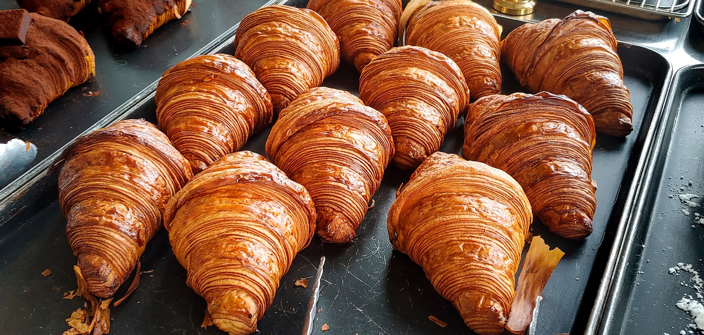
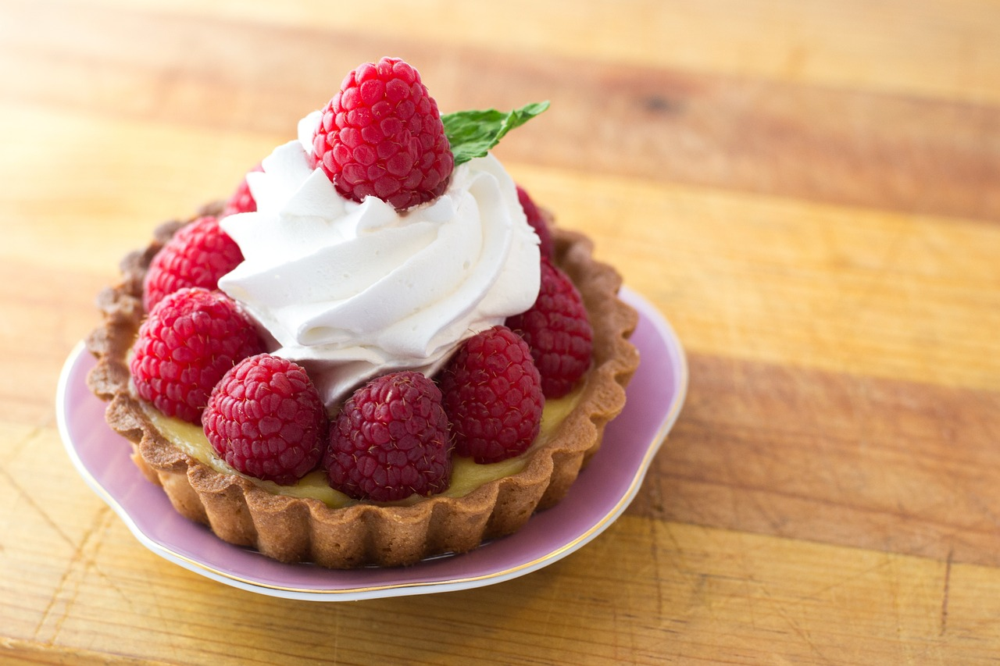
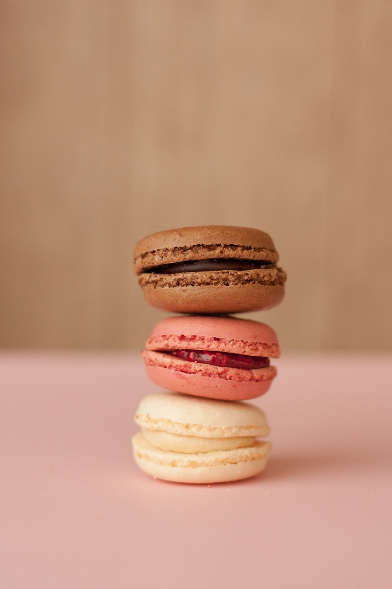

Bienvenue à La Maison des Délices
Découvrez le savoir-faire artisanal de votre boulangerie-pâtisserie locale. Chaque jour, nous préparons avec amour des pains, viennoiseries et pâtisseries, réalisés à partir d’ingrédients de qualité et selon des recettes traditionnelles.
Produits phares
- Pain de campagne : Un pain généreux à la croûte dorée et à la mie moelleuse, parfait pour vos repas du quotidien.
- Croissants au beurre : Légers et croustillants, nos croissants sont un incontournable pour vos petits-déjeuners.
- Tarte aux fraises : Une pâte sablée croustillante garnie de crème pâtissière et de fraises fraîches.
- Macarons assortis : Un assortiment de macarons aux saveurs variées : chocolat, vanille, framboise et pistache.



